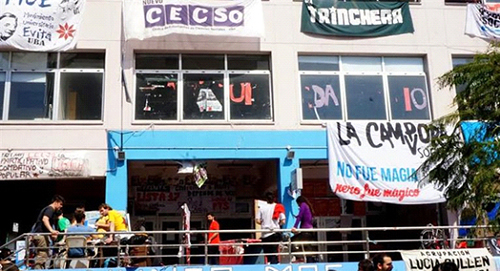

Real Chubut - Agencia de Noticias


El oficialismo no logra imponerse en el electorado universitario

Pese a que Cambiemos ganó las últimas elecciones presidenciales en diciembre de 2015, no cuenta con la misma suerte entre el electorado de la Universidad de Buenos Aires. Basta ver los resultados de los comicios para la conducción de los centros de estudiantes de la casa de estudios, donde el oficialismo no consiguió ninguna victoria ni superó, en la mayoría de los casos, el 10% de los votos a favor.
La mejor universidad de Iberoamérica y la número 85 del mundo, según el último Ranking Mundial de Universidades QS, celebró entre el 10 al 17 de septiembre los comicios para renovar la conducción de los centros de estudiantes de sus facultades. Ninguno de ellos quedó en manos del PRO.
Comencemos por la Facultad de Derecho. En sus primeros comicios siendo oficialismo nacional, Cambiemos perdió el centro de estudiantes, que estaba en manos de Franja Morada desde el año pasado. Además, el kirchnerismo desplazó al PRO del tercer lugar.
Se trata de una de las elecciones estudiantiles más importantes en la UBA. En sólo un año, el radicalismo perdió el Centro de Estudiantes de la Facultad de Derecho que había ganado en septiembre del año pasado, ahora en manos de una agrupación del Partido Socialista e independientes. Además, la lista del PRO pasó de sacar 13 puntos en 2015 a poco más del 6% este año, viéndose desplazada rotundamente por la lista del kirchnerismo con La Cámpora a la cabeza.
"Creemos que esto es una foto de lo que pasa en el país" contó Julián Eyzaguirre de La Cámpora Universidad. "El PRO y Franja Morada crecieron en la Facultad con el impulso de la elección nacional y a sólo un año de esa elección, los mismos estudiantes les retiraron el apoyo.
Esto habla del impacto negativo y el rechazo que generó este primer año de gobierno del PRO aún en aquellos quienes los habían elegido", expresó. "En contra de muchos pronósticos, creció el kirchnerismo en la Facultad y tenemos expectativas de hacerlo en el resto de los comicios estudiantiles este año y en el país el año que viene".
Por su parte la Facultad de Ciencias Sociales quedó en manos de del frente kirchnerista, que arrasó con el 48% de los votos, sacando más de 20 puntos de diferencia con las demás listas.
De esta manera, el frente que conforman la UES y Proyecto Sociales (Unidos y Organizados) volverá a conducir el centro de estudiantes por un año más. Así, renovaron sus mandatos como co-presidencia del Centro Pablo "Chango" Móbili (La Cámpora) y Belén Figueredo (UES).
Se trata de una elección que reafirma la conducción del kirchnerismo entre los estudiantes de esa facultad en lo que fueron los primeros comicios desde que esta fuerza política abandonó el Gobierno nacional.
La lista que resultó ganadora obtuvo un total de 3.420 votos, lo que representa un porcentaje del 48%. El Frente está integrado por las agrupaciones UES, La Cámpora, El Mate (Nuevo Encuentro), La Trinchera (CUPP), Megafón (Peronismo Militante), Movimiento Evita, Los Irrompibles, Kolina, PCCE, Cullen y La Brújula (Movimiento Proyecto Popular). Las restantes listas quedaron más de 20 puntos abajo, inclusive las del Partido Obrero y la de La Mella, antiguas conducciones en esa Facultad.
"Este triunfo da cuenta de la gestión de un año realizada por el kirchnerismo en el centro que conduce en la UBA, en lo que es la primera experiencia de esta fuerza política al frente de un Centro de Estudiantes", expresó el "Chango" Móbili, co-presidente del CECSo por La Cámpora. "Esta elección confirma que somos capaces de gestionar la herramienta gremial y de representar a los estudiantes. Construimos un centro presente en las aulas, mejorando las condiciones de cursada de los estudiantes, y presente en las calles, luchando contra las políticas neoliberales del gobierno de Macri", señaló.
En relación con el escenario nacional, el "Chango" sostuvo que "esta victoria confirma que el kirchnerismo está muy lejos de estar muerto y que vamos a seguir haciendo crecer el armado universitario y la construcción de este proyecto colectivo".
La elección se realizó desde el lunes 12 hasta el sábado 17 de septiembre y este año se implementó por primera vez la veda electoral en la zona de votación. Participaron unos 7.000 estudiantes sobre un padrón de 10.000, lo cual representa un porcentaje alto a pesar de tratarse de una elección no obligatoria.
El recuento de votos se extendió hasta la noche del sábado en la sede de Sociales del barrio de Constitución, donde una multitud de militantes festejaban con banderas y choripanes el triunfo del kirchnerismo. Para que no quedaran dudas, del frente de la Facultad flameó hasta bien entrada la noche una bandera de 15 metros con las siglas "CFK".
La Facultad de Ciencias Exactas mantuvo en su conducción a la izquierda, que gobierna históricamente esa casa de estudios. El Frente de Estudiantes Movilizados, que conforma La Mella, volvió a ganar las elecciones para Centro de Estudiantes en la Facultad de Exactas con una importante ventaja: más del 47% de los votos. En segundo lugar, se ubicó el frente conformado por PO, IS y Nuevo MAS con el 20,74% de los votos, seguidos muy de cerca con el frente Exactas puede más que componen La Cámpora, Nuevo Encuentro y Movimiento Evita que sumaron 20,38%.
En el plano universitario, el radicalismo tiene el protagonismo que aún no consigue en la gestión de Mauricio Macri. Así se evidencia en Económicas y Medicina, donde supieron retener a su electorado.
En Ciencias Económicas el oficialismo histórico se mantuvo. Nuevo Espacio, la organización que dirige el radical Emiliano Yacobitti, obtuvo el 60,7% de los votos; muy por detrás, en el segundo lugar, quedo SOS (La Mella) con el 9,51%.
En la Facultad de Medicina, por otro año consecutivo los radicales de Nuevo Espacio se quedaron con la conducción del Centro de Estudiantes de Ciencias Médicas, al obtener el 55% de los votos. El Frente, coalición formada entre PO e IS, logró el 14% y lo siguió el kirchnerismo con 9 puntos y Miles con 7.
En el resto de las facultades en que se presentó, el desempeño del PRO no fue mejor. Obtuvo solamente un 3% en Medicina, 7% en Económicas, 5% en Farmacia y un 12% en Veterinarias.